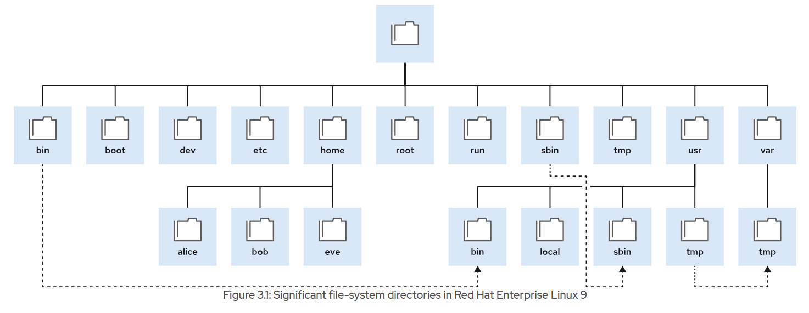
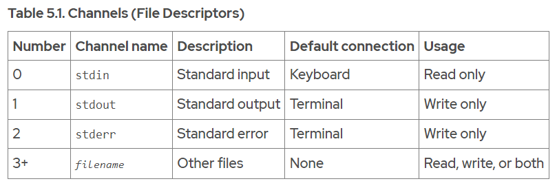
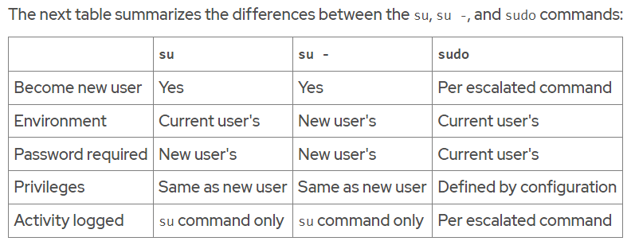
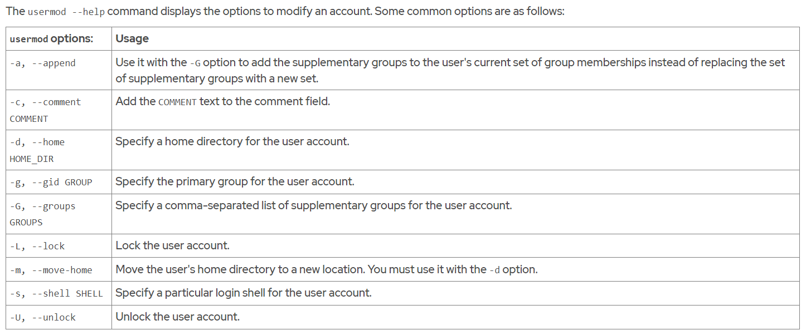
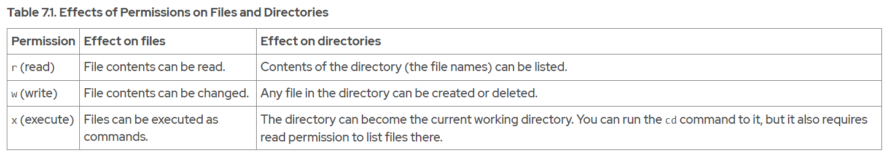
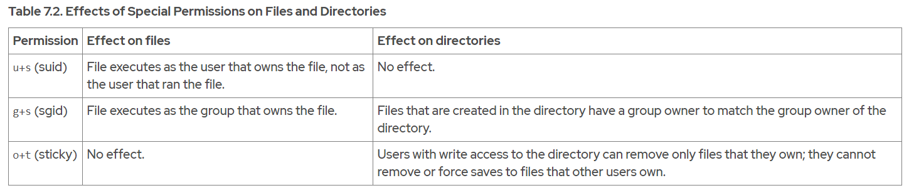

The GNU Bourne-Again Shell (bash) is a program that interprets commands that the user types. Each string that is typed into the shell can have up to three parts: the command, options (which usually begin with a hyphen - or double hyphen -- characters), and arguments. Each word that is typed into the shell is separated from other words with spaces.
whoami
To type more than one command on a single line, use the semicolon (;) as a command separator. A semicolon is a member of a class of characters called metacharacters that have a special interpretation for bash.
The date command displays the current date and time.
date
date +%x
The passwd command with no options changes the current user's password.
passwd
Linux does not require file name extensions to classify files by type. The file command scans the compiled header of a file for a 2-digit magic number and displays its type.
file /etc/passwd
file /bin/passwd
file /home
The cat command is often used in Linux. Use this command to create single or multiple files, view the contents of files, concatenate the contents from various files, and redirect contents of the file to a terminal or to files.
cat /etc/passwd
cat file1 file2
The cat command does not display the contents of a file as pages. The less command displays one page of a file at a time and we can scroll at our leisure.
The head and tail commands display the beginning and the end of a file, respectively. By default, these commands display 10 lines of the file, but they both have a -n option to specify a different number of lines.
head /etc/passwdtail -n 3 /etc/passwd
The wc command counts lines, words, and characters in a file. Use the -l, -w, or -c options to display only the given number of lines, words, or characters, respectively.
wc /etc/passwdwc -l /etc/passwd ; wc -l /etc/groupwc -c /etc/group /etc/hosts
With tab completion, users can quickly complete commands or file names after typing enough at the prompt to make it unique. If the typed characters are not unique, then pressing the Tab key twice displays all commands that begin with the typed characters.
Use the useradd command to create users on the system. The useradd command has many options that might be hard to remember. By using tab completion, we can complete the option name with minimal typing.
To write one command in more than one line, use a backslash character (\), which is referred to as the escape character. The backslash character ignores the meaning of the following character.
The history command displays a list of previously executed commands that are prefixed with a command number.
history
The exclamation point character (!) is a metacharacter to expand previous commands without retyping them. The !number command expands to the command that matches the specified number. The !string command expands to the most recent command that begins with the specified string.
The Alt+. key combination is particularly convenient, because we can hold down Alt and press . repeatedly to quickly cycle earlier commands.
Ctrl+A Jump to the beginning of the command line. Ctrl+E Jump to the end of the command line.

Relative path names follow this rule: a path name with anything other than a forward slash as the first character is a relative path name. For example, relative to the /var directory, the message log file is log/messages.
Linux file systems, including ext4, XFS, GFS2, and GlusterFS, are case-sensitive. Creating the FileCase.txt and filecase.txt files in the same directory results in two unique files.
The pwd command displays the full path name of the current working directory for that shell. This command helps us to determine the syntax to reach files by using relative path names. The ls command lists directory contents for the specified directory or, if no directory is given, for the current working directory.
pwdls
The ls command has multiple options for displaying attributes on files. The most common options are -l (long listing format), -a (all files, including hidden files), and -R (recursive, to include the contents of all subdirectories).
ls -lls -la
At the top of the listing are two special directories. One dot (.) refers to the current directory, and two dots (..) refer to the parent directory. These special directories exist in every directory on the system, and they are useful when using file management commands.
Use the cd command to change our shell's current working directory. If we do not specify any arguments to the command, then it changes to our home directory.
The cd - command changes to the previous directory, where the user was previously to the current directory.
cd -
The prompt displays the tilde character (~) when our current working directory is our home directory.
The touch command updates the time stamp of a file to the current date and time without otherwise modifying it. This command is useful for creating empty files.
touch
The mkdir command creates one or more directories or subdirectories. It takes as an argument a list of paths to the directories that we want to create
mkdir ProjectX ProjectY ProjectZ
If the directory exists, or a parent directory of the directory that we are trying to create does not exist, then the mkdir command fails and it displays an error.
The mkdir command -p (parent) option creates any missing parent directories for the requested destination.
The cp command copies a file, and creates a file either in the current directory or in a different specified directory.
cp
We can also use the cp command to copy multiple files to a directory. In this scenario, the last argument must be a directory. The copied files retain their original names in the new directory. If a file with the same name exists in the target directory, then the existing file is overwritten.
By default, the cp command does not copy directories; it ignores them. We can copy directories and their contents by using the cp command -r option.
cp -r
The mv command moves files from one location to another. If we think of the absolute path to a file as its full name, then moving a file is effectively the same as renaming a file. The contents of the files that are moved remain unchanged.
mvmv -v
The rm command removes files. By default, rm does not remove directories. We can use the rm command -r or the --recursive option to enable the rm command to remove directories and their contents. The rm -r command traverses each subdirectory first, and individually removes their files before removing each directory. We can use the rm command -i option to interactively prompt for confirmation before deleting. This option is essentially the opposite of using the rm command -f option, which forces the removal without prompting the user for confirmation. If We specify both the -i and -f options, then the -f option takes priority and we are not prompted for confirmation before rm removes files.
rmrm -rrm -irm -f
We can also use the rmdir command to remove empty directories. Use the rm command -r option to remove non-empty directories.
rmdir
We can create multiple file names that point to the same file. These file names are called links. We can create two types of links: a hard link, or a symbolic link (sometimes called a soft link).
Every file starts with a single hard link, from its initial name to the data on the file system. When we create a hard link to a file, we create another name that points to that same data.
We can use the ln command to create a hard link (another file name) that points to an existing file. The command needs at least two arguments: a path to the existing file, and the path to the hard link that we want to create.
ln filename1 filename2
To determine whether two files are hard linked, use the ls command -i option to list each file's inode number. If the files are on the same file system and their inode numbers are the same, then the files are hard links that point to the same data file content.
ls -il filename1 filename2
Hard links that reference the same file share the inode structure with the link count, access permissions, user and group ownership, time stamps, and file content. When that information is changed for one hard link, then the other hard links for the same file also show the new information.
Even if the original file is deleted, we can still access the contents of the file provided that at least one other hard link exists. Data is deleted from storage only when the last hard link is deleted, which makes the file contents unreferenced by any hard link.
Hard links have some limitations. First, we can use hard links only with regular files. We cannot use the ln command to create a hard link to a directory or special file.
Second, we can use hard links only if both files are on the same file system.
We can use the df command to list the directories that are on different file systems.
df
The ln command -s option creates a symbolic link, which is also called a "soft link". A symbolic link is not a regular file, but a special type of file that points to an existing file or directory.
Symbolic links have some advantages over hard links: Symbolic links can link two files on different file systems. Symbolic links can point to a directory or special file, not just to a regular file.
When we type a command at the Bash shell prompt, the shell processes that command line through multiple expansions before running it. We can use these shell expansions to perform complex tasks that would otherwise be difficult or impossible.
Following are the main expansions that Bash shell performs:
- Brace expansion, which can generate multiple strings of characters
- Tilde expansion, which expand to a path to a user home directory
- Variable expansion, which replaces text with the value that is stored in a shell variable
- Command substitution, which replaces text with the output of a command
- Pathname expansion, which helps to select one or more files by pattern matching
ls a*ls [ac]*
Brace expansion is used to generate discretionary strings of characters. Brace expansions might be nested, one inside another. We can also use double-dot syntax (..), which expands to a sequence. For example, the {m..p} double-dot syntax inside braces expands to m n o p.
echo file{1..3}.txtmkdir ../RHEL{7,8,9}ls ../RHEL*
A variable acts like a named container that stores a value in memory. We can assign data as a value to a variable and use variable expansion to convert the variable name to its value on the command line. If a string starts with a dollar sign ($), then the shell tries to use the rest of that string as a variable name and to replace it with the variable value.
VARIABLENAME=valueecho $VARIABLENAME
To prevent mistakes due to other shell expansions, we can put the name of the variable in curly braces, for example ${VARIABLENAME}.
Command substitution enables the output of a command to replace the command itself on the command line. Command substitution occurs when we enclose a command in parentheses and precede it by a dollar sign ($). The $(command) form can nest multiple command expansions inside each other.
echo The time is $(date +%M) minutes past $(date +%l%p)
Many characters have a special meaning in the Bash shell. To prevent shell expansions on parts of our command line, we can quote and escape characters and strings. The backslash (\) is an escape character in the Bash shell. To protect longer character strings, we can use single quotation marks (') or double quotation marks (") to enclose strings.
One source of documentation that is generally available on the local system is system manual pages or man pages. The pages are stored in subdirectories of the /usr/share/man directory. To read specific man pages, use the man topic command. To display the man page topic from a specific section, you can use the man section topic command.
man passwdman 5 passwd
Popular system administration topics are in sections 1 (user commands), 5 (file formats), and 8 (administrative commands). Administrators who use certain troubleshooting tools also use section 2 (system calls).
Use the man command -k option (equivalent to the apropos command) to search for a keyword in man page titles and descriptions.
man -k passwd
The man command -K (uppercase) option searches for the keyword in the full-text page, not only in the titles and descriptions. A full-text search uses greater system resources and takes more time.
man -K passwd
A running program, or process, reads input and writes output. A process uses numbered channels called file descriptors to get input and send output. All processes start with at least three file descriptors. Standard input (channel 0) reads input from the keyboard. Standard output (channel 1) sends normal output to the terminal. Standard error (channel 2) sends error messages to the terminal. If a program opens separate connections to other files, then it might use higher-numbered file descriptors.
> fileRedirect stdout to overwrite a file>> fileRedirect stdout to append to a file2> fileRedirect stderr to overwrite a file2> /dev/nullDiscard stderr error messages by redirecting them to /dev/null> file 2>&1Redirect stdout and stderr to overwrite the same file>> file 2>&1Redirect stdout and stderr to append to the same file
A pipeline is a sequence of one or more commands that are separated by the vertical bar character (|). A pipeline connects the standard output of the first command to the standard input of the next command.
When we combine redirection with a pipeline, the shell sets up the entire pipeline first, and then it redirects the input/output. If you use output redirection in the middle of a pipeline, then the output goes to the file and not to the next command in the pipeline.
In the next example, the output of the ls command goes to the /tmp/saved-output file, and the less command displays nothing on the terminal.
ls > /tmp/saved-output | less
The tee command overcomes this limitation. In a pipeline, tee copies its standard input to its standard output and also redirects its standard output to the files that are given as arguments to the command. If we imagine data as water that flows through a pipeline, then we can visualize tee as a "T" joint in the pipe that directs output in two directions.
The next example redirects the output of the ls command to the /tmp/saved-output file and passes it to the less command, so it is displayed on the terminal one screen at a time.
ls -l | tee /tmp/saved-output | less
If we use the tee command at the end of a pipeline, then the terminal shows the output of the commands in the pipeline and saves it to a file at the same time.
ls -t | head -n 10 | tee /tmp/ten-last-changed-files
Use the tee command -a option to append the content to a file instead of overwriting it.
ls -l | tee -a /tmp/append-files
The fundamental design principle of Linux is that it supports storage of the information and configuration settings in text-based files. These files follow various structures such as lists of settings, INI-like formats, structured XML or YAML, and others. The advantage of storing files in a text-based structure is that they are edited with any text editor.
Vim is an improved version of the vi editor, which is distributed with Linux and UNIX systems. Vim is a highly configurable and efficient editor that provides split-screen editing, color formatting, and highlighting for editing text.
The Vim editor offers various modes of operation such as command mode, extended command mode, edit mode, and visual mode.
- An i keystroke enters insert mode, where all typed text becomes file content. Pressing Esc returns to command mode.
- A v keystroke enters visual mode, where multiple characters might be selected for text manipulation. Use Shift+V for multiline and Ctrl+V for block selection. To exit the visual mode, use the v, Shift+V, or Ctrl+V keystrokes.
- The : keystroke begins extended command mode for tasks such as writing the file (to save it) and quitting the Vim editor.
- The u key undoes the most recent edit.
- The x key deletes a single character.
- The :w command writes (saves) the file and remains in command mode for more editing.
- The :wq command writes (saves) the file and quits Vim.
- The :q! command quits Vim, and discards all file changes since the last write.
In Vim, we can yank and put (copy and paste), by using the y and p command characters. Position the cursor on the first character to select, and then enter visual mode. Use the arrow keys to expand the visual selection. When ready, press y to yank the selection into memory. Position the cursor at the new location, and then press p to put the selection at the cursor.
Visual mode is useful to highlight and manipulate text in different lines and columns. We can enter various visual modes in Vim by using the following key combinations.
- Character mode : v
- Line mode : Shift+v
- Block mode : Ctrl+v
The /etc/vimrc and ~/.vimrc configuration files alter the behavior of the vim editor for the entire system or for a specific user respectively. Within these configuration files, we can specify behavior such as the default tab spacing, syntax highlighting, color schemes, and more. Modifying the behavior of the vim editor is particularly useful when working with languages such as YAML, which have strict syntax requirements.
With the Bash shell, we can set shell variables to help to run commands or to modify the behavior of the shell. We can also export shell variables as environment variables, which are automatically copied to programs that are run from that shell.
Shell variables are unique to a particular shell session. If we have two terminal windows open, or two independent login sessions to the same remote server, then we are running two shells. Each shell has its own set of values for its shell variables.
VARIABLENAME=valueecho $VARIABLENAME
Some shell variables are set when Bash starts. We can modify them to adjust the shell's behavior. For example, the HISTFILE, HISTFILESIZE, and HISTTIMEFORMAT shell variables affect the shell history and the history command. The HISTFILE variable specifies which file to save the shell history to, and defaults to the ~/.bash_history file. The HISTFILESIZE variable specifies how many commands to save in that file from the history. The HISTTIMEFORMAT variable defines the time stamp format for every command in the history.
The shell provides an environment for the programs that we run from that shell. Among other items, this environment includes information about the current working directory on the file system, the command-line options that are passed to the program, and the values of environment variables.
If a shell variable is not an environment variable, then only the shell can use it. However, if a shell variable is an environment variable, then the shell and any programs that run from that shell can use the variable.
We can assign any variable that is defined in the shell as an environment variable by marking it for export with the export command.
export EDITOR=vim
An important environment variable is PATH. The PATH variable contains a list of colon-separated directories that contain programs.
echo $PATH
When We run a command such as the ls command, the shell looks for the ls executable file in each of those directories in order, and runs the first matching file that it finds.
We can append directories to our PATH variable.
export PATH=${PATH}:/home/user/sbin
To list all the environment variables for a shell, run the env command
When Bash starts, several text files run with shell commands that initialize the shell environment. The exact scripts that run depend on whether the shell is interactive or non-interactive, and a login or non-login shell. A user directly enters commands into an interactive shell, whereas a non-interactive shell, such as a script, runs in the background without user intervention. A login shell is invoked when a user logs in locally via the terminal or remotely via the SSH protocol. A non-login shell is invoked from an existing session, such as to open a terminal from the GNOME GUI.
For interactive login shells, the /etc/profile and ~/.bash_profile files configure the Bash environment. The /etc/profile and ~/.bash_profile files also source the /etc/bashrc and ~/.bashrc files respectively. For interactive non-login shells, only the /etc/bashrc and ~/.bashrc files configure the Bash environment. Whereas the /etc/profile and /etc/bashrc files apply to the whole system, the ~/.bash_profile and ~/.bashrc files are user-specific. Non-interactive shells invoke any files that the BASH_ENV variable defines.
To create a variable that is available to all of our interactive shells, edit the ~/.bashrc file. To apply a variable only once after the user logs in, define it in the ~/.bash_profile file.
Bash aliases are shortcuts to other Bash commands. For example, if we must often type a long command, then we can create a shorter alias to invoke it. We use the alias command to create aliases. Add aliases to a user's ~/.bashrc file so they are available in any interactive shell.
alias hello='echo "Hello, this is a long string."'
To unset and unexport a variable, use the unset command
To unexport a variable without unsetting it, use the export -n command
To unset an alias, use the unalias command
A user account provides security boundaries between people and programs that can run commands. Users have usernames to identify them to human users. Internally, the system distinguishes user accounts by the unique identification number, the user ID or UID, which is assigned to them. Every process (running program) on the system runs as a particular user. Every file has a particular user as its owner. The user that is associated with a running process determines the files and directories that are accessible to that process.
User accounts are of the following main types: the superuser, system users, and regular users.
- The superuser account administers the system. The superuser name is root and the account has a UID of 0. The superuser has full system access.
- The system user accounts are used by processes that provide supporting services. They are assigned non-privileged accounts to secure their files and other resources from each other and from regular users on the system.
- Most users have regular user accounts for their day-to-day work. Like system users, regular users have limited access to the system.
Use the id command to show information about the currently logged-in user. To view information about another user, pass the username to the id command as an argument.
idid user01
Use the ls -l command to view the owner of a file. Use the ls -ld command to view the owner of a directory.
ls -l myfile.txtls -ld Documents
Use the ps command to view process information. The default is to show only processes in the current shell. Use the ps command -a option to view all processes with a terminal. Use the ps command -u option to view the user that is associated with a process.
ps -au
By default, systems use the /etc/passwd file to store information about local users. Each line in the /etc/passwd file contains information about one user.
cat /etc/passwd
Each line is divided into seven colon-separated fields.
- Part 1 : The username for this user
- Part 2 : The user's encrypted password was historically stored here; it is now a placeholder
- Part 3 : The UID number for this user account
- Part 4 : The GID number for this user account's primary group
- Part 5 : A brief comment, description, or the real name for this user
- Part 6 : The user's home directory, and the initial working directory when the login shell starts
- Part 7 : The default shell program for this user that runs at login
A group is a collection of users that need to share access to files and other system resources. Groups can grant access to files to a set of users instead of to a single user. Internally, the system distinguishes groups by the unique identification number, the group ID or GID. By default, systems use the /etc/group file to store information about local groups. Each line in the /etc/group file contains information about one group. Each group entry is divided into four colon-separated fields.
cat /etc/group
- Part 1 : Name for this group
- Part 2 : Obsolete group password field; it is now a placeholder
- Part 3 : The GID number for this group
- Part 4 : A list of users that are members of this group as a supplementary group
Every user has exactly one primary group. For local users, this group is listed by GID in the /etc/passwd file. The primary group owns files that the user creates. When a regular user is created, a group is created with the same name as the user, to be the primary group for the user. The user is the only member of this User Private Group. This group membership design simplifies the management of file permissions.
Users might also have supplementary groups. Membership in supplementary groups is stored in the /etc/group file. Users are granted access to files based on whether any of their groups have access, regardless of whether the groups are primary or supplementary.
With the su command, users can switch to a different user account. If we omit the username, then the su or su - command attempts to switch to root by default.
su - user02su -
The su command starts a non-login shell, whereas the su - command (with the dash option) starts a login shell. The main distinction between the two commands is that su - sets up the shell environment as if it is a new login as that user, whereas su starts a shell as that user, but uses the original user's environment settings.
Unlike the su command, sudo normally requires users to enter their own password for authentication, not the password of the user account that they are trying to access. That is, users who use the sudo command to run commands as root do not need to know the root password. Instead, they use their own passwords to authenticate access.
If a user tries to run a command as another user, and the sudo configuration does not permit it, then bash blocks the command, logs the attempt, and sends by default an email to the root user. Another benefit of sudo is to log by default all the executed commands to /var/log/secure. In Red Hat Enterprise Linux 7 and later versions, all members of the wheel group can use sudo to run commands as any user, including root, by using their own password.
To access the root account with sudo, use the sudo -i command. This command switches to the root account and runs that user's default shell (usually bash) and associated interactive login scripts. To run the shell without the interactive scripts, use the sudo -s command. For example, an administrator can get an interactive shell as root on an AWS Elastic Cloud Computing (EC2) instance by using SSH public-key authentication to log in as the ec2-user normal user. Then run the sudo -i command to access the root user's shell.
sudo -isudo -s
The /etc/sudoers file is the main configuration file for the sudo command. The following line from the /etc/sudoers file enables sudo access for wheel group members
%wheel ALL=(ALL:ALL) ALL
- The %wheel string is the user or group that the rule applies to. The % symbol before the wheel word specifies a group.
- The ALL=(ALL:ALL) command specifies that on any host with this file (the first ALL), users in the wheel group can run commands as any other user (the second ALL) and as any other group (the third ALL) on the system.
- The final ALL command specifies that users in the wheel group can run any command.
By default, the /etc/sudoers file also includes the contents of any files in the /etc/sudoers.d directory as part of the configuration file. With this hierarchy, we can add sudo access for a user by putting an appropriate file in that directory.
To enable full sudo access for the user01 user, we can create the /etc/sudoers.d/user01 file with the following content
user01 ALL=(ALL) ALL
To enable full sudo access for the group01 group, we can create the /etc/sudoers.d/group01 file with the following content
%group01 ALL=(ALL) ALL
To enable users in the games group to run the id command as the operator user, we can create the /etc/sudoers.d/games file with the following content
%games ALL=(operator) /bin/id
We can also set up sudo to allow a user to run commands as another user without entering their password, by using the NOPASSWD: ALL command:
ansible ALL=(ALL) NOPASSWD: ALL
The useradd username command creates a user called username. It sets up the user's home directory and account information, and creates a private group for the user called username. At this point, a valid password is not set for the account, and the user cannot log in until a password is set.
The /etc/login.defs file sets some default options for user accounts, such as the range of valid UID numbers and default password aging rules. The values in this file affect only newly created user accounts. A change to this file does not affect existing users.
The userdel username command removes the username user from /etc/passwd, but leaves the user's home directory intact. The userdel -r username command removes the user from /etc/passwd and deletes the user's home directory.
When we remove a user without specifying the userdel -r option, an unassigned UID now owns the user's files. If we create a user and that user is assigned the deleted user's UID, then the new account owns those files, which is a security risk. The root user can use the find / -nouser -o -nogroup command to find all unowned files and directories.
The passwd username command sets the initial password or changes the existing password for the username user. The root user can set a password to any value. The terminal displays a message if the password does not meet the minimum recommended criteria, but then we can retype the new password and the passwd command updates it successfully.
Red Hat Enterprise Linux uses specific UID numbers and ranges of numbers for specific purposes.
- UID 0 : The superuser (root) account UID.
- UID 1-200 : System account UIDs that are statically assigned to system processes.
- UID 201-999 : UIDs that are assigned to system processes that do not own files on this system. Software that requires an unprivileged UID is dynamically assigned a UID from this available pool.
- UID 1000+ : The UID range to assign to regular, unprivileged users.
The groupadd command creates groups. Without options, the groupadd command uses the next available GID from the range that the GID_MIN and GID_MAX variables specify in the /etc/login.defs file. By default, the command assigns a GID value that is greater than any other existing GIDs, even if a lower value becomes available.
The groupadd command -g option specifies a GID for the group to use.
groupadd -g 10000 group01
The groupadd command -r option creates system groups. As with normal groups, system groups use a GID from the range of listed valid system GIDs in the /etc/login.defs file. The SYS_GID_MIN and SYS_GID_MAX configuration items in the /etc/login.defs file define the range of system GIDs.
groupadd -r group02
The groupmod command changes the properties of an existing group. The groupmod command -n option specifies a new name for the group.
groupmod -n newname oldname
The groupmod command -g option specifies a new GID.
groupmod -g newgroupid groupname
The groupdel command removes groups. We cannot remove a group if it is the primary group of an existing user.
groupdel group0022
Use the usermod -g command to change a user's primary group.
usermod -g group01 user02
Use the usermod -aG command to add a user to a supplementary group. The usermod command -a option enables the append mode. Without the -a option, the command removes the user from any of their current supplementary groups that are not included in the -G option's list.
usermod -aG group01 user03
The only distinction between a user's primary and supplementary memberships is when a user creates a file. New files must have a user owner and a group owner, which is assigned when the file is created. The user's primary group is used for the new file's group ownership, unless command options override it.
Only a user's primary group is used for new file creation attributes. However, we can temporarily switch our primary group to a supplementary group that we already belong to. We might switch if we are about to create files, manually or scripted, and want to assign a different group as owner when they are being created. Use the newgrp command to switch our primary group, in this shell session. Our primary group returns to the default if we log out and log in again.
newgrp group01
Originally, encrypted passwords were stored in the world-readable /etc/passwd file. These passwords were considered adequate until dictionary attacks on encrypted passwords became common. The cryptographically hashed passwords were moved to the /etc/shadow file, which only the root user can read. Each line from the /etc/shadow file has nine colon-separated fields
- Part 1 : Name of the user account
- Part 2 : The cryptographically hashed password of the user
- Part 3 : The days from the epoch when the password was last changed, where the epoch is 1970-01-01 in the UTC time zone
- Part 4 : The minimum days since the last password change before the user can change it again
- Part 5 : The maximum days without a password change before the password expires. An empty field means that the password never expires
- Part 6 : The number of days ahead to warn the user that their password will expire
- Part 7 : The number of days without activity, starting with the day that the password expired, before the account is automatically locked
- Part 8 : The day when the account expires in days since the epoch. An empty field means that the account never expires.
- Part 9 : The last field is typically empty and is reserved for future use
The cryptographically hashed password field stores three pieces of information: the hashing algorithm in use, the salt, and the cryptographical hash. Each piece of information is delimited by the dollar ($) character.
$6$CSsXcYG1L/4ZfHr/$2W6evvJahUfzfHpc9X.45Jc6H30E
- 6 : The hashing algorithm in use for this password. A 6 indicates a SHA-512 hash, the RHEL 9 default; a 1 indicates MD5; and a 5 indicates SHA-256.
- CSsXcYG1L/4ZfHr/ : The salt in use to cryptographically hash the password; it is originally chosen at random.
- 2W6evvJahUfzfHpc9X.45Jc6H30E : The cryptographical hash of the user's password; combining the salt and the plain text password and then cryptographically hashing to generate the password hash.
When a user tries to log in, the system looks up the entry for the user in the /etc/shadow file, and combines the salt for the user with the plain text typed password. The system then cryptographically hashes the combination of the salt and plain text password with the specified hashing algorithm. If the result matches the cryptographical hash, then the user typed the right password.
The following example demonstrates the chage command to change the password policy of the sysadmin05 user. The command defines a minimum age (-m) of zero days, a maximum age (-M) of 90 days, a warning period (-W) of 7 days, and an inactivity period (-I) of 14 days.
chage -m 0 -M 90 -W 7 -I 14 sysadmin05
We want to set the account expiration 30 days from today for cloudadmin10 user, so we use the following commands
chage -E $(date -d "+30 days" +%F) cloudadmin10
We can check the current password policy of a user using the following command
chage -l username
We want the cloudadmin10 user to change the password on the next login, so we use the following command
chage -d 0 cloudadmin10
The next time that the cloudadmin10 user logs in, the user is prompted to change the password.
We can change the default password aging configuration in the /etc/login.defs file. The PASS_MAX_DAYS and PASS_MIN_DAYS options set the default maximum and minimum age of the password respectively. The PASS_WARN_AGE sets the default warning period of the password.
We can use the usermod command to modify account expiration for a user. For example, the usermod command -L option locks a user account and the user cannot log in to the system. We an use -U option to unlock the user.
usermod -L sysadmin03usermod -U sysadmin03
In the following example, the usermod command locks and expires the cloudadmin10 user at 2023-09-14.
usermod -L -e 2023-09-14 cloudadmin10
The nologin shell acts as a replacement shell for the user accounts that are not intended to log in interactively to the system. It is good security practice to disable an account from logging in to the system when the account does not require it. For example, a mail server might require an account to store mail and a password for the user to authenticate with a mail client to retrieve mail. That user does not need to log in directly to the system.
A common solution to this situation is to set the user's login shell to /sbin/nologin. If the user attempts to log in to the system directly, then the nologin shell closes the connection.
usermod -s /sbin/nologin newapp
File permissions control access to files. Files have three user categories that permissions apply to. We can set different permissions for the owning user (user permissions), the owning group (group permissions), and for all other users on the system that are not the user or a member of the owning group (other permissions).
Users normally have both read and execute permissions on read-only directories so that they can list the directory and have read-only access to all of its contents. If a user has only read access on a directory, then they can list the names of the files in it. However, the user cannot access other information, such as permissions or time stamps. If a user has only execute access on a directory, then they cannot list file names in the directory. If they know the name of a file that they have permission to read, then they can access the contents of that file from outside the directory by explicitly specifying the relative file name.
Anyone who owns or has write permissions to a directory can remove files on it, regardless of the ownership or permissions on the file itself. You can override this behavior by using the sticky bit permission.
The ls command -l option shows detailed information about permissions and ownership. Use the ls command -d option to show detailed information about a directory itself, and not its contents.
The first character of the long listing is the file type, and is interpreted as follows
- - is a regular file
- d is a directory
- l is a symbolic link
- c is a character device file
- b is a block device file
- p is a named pipe file
- s is a local socket file
Use the chmod command to modify file and directory permissions.
chmod Who/What/Which file|directory
- Who: u(user), g(group), o(other), a(all)
- What: +(add), -(remove), =(set exactly)
- Which: r(read), w(write), x(execute), X(special execute)
We can use the chmod command -R option to recursively set permissions on the files in an entire directory tree.
chmod -R .....
We can use the chmod command to change file permissions with the octal method instead of the symbolic method. With the octal method, we can represent permissions as a 3-digit (or 4-digit, when setting advanced permissions) octal number. 4(read), 2(write), 1(execute).
Only the root user can change the user that owns a file. However, the file's owner and the root user can set group ownership. The root user can grant file ownership to any group, but only regular users can change the file's group ownership if they are a member of the destination group.
We can change file ownership by using the chown (change owner) command. The chown command -R option recursively changes the ownership of an entire directory tree. We can also use the chown command to change group ownership of a file by preceding the group name with a colon (:). We can use the chown command to change both owner and group at the same time by using the owner:group syntax.
chown newuser filenamechwon -R newuser directorynamechwon :newgroup file/directorynamechwon newuser:newgroup file/directoryname
Special permissions are a fourth permission type in addition to the user, group, and other types.
The setuid permission on an executable file means that commands run as the user that owns that file, rather than as the user that ran the command. One example is the passwd command
ls -l /usr/bin/passwd
In a long listing, we can identify the setuid permissions by a lowercase s character in the place where we would normally expect the x character (owner execute permissions). If the owner does not have execute permissions, then this character is replaced by an uppercase S character.
The setgid special permission on a directory means that created files in the directory inherit their group ownership from the directory, rather than inheriting group ownership from the creating user. This feature is commonly used on group collaborative directories to automatically change a file from the default private group to the shared group, or if a specific group should always own files in a directory. An example of this behavior is the /run/log/journal directory
ls -ld /run/log/journal
If setgid is set on an executable file, then commands run as the group that owns that file, rather than as the user that ran the command. This condition is similar to the way that setuid works. One example is the locate command
ls -ld /usr/bin/locate
In a long listing, we can identify the setgid permissions by a lowercase s character in the place where we would normally expect the x character (group execute permissions). If the group does not have execute permissions, then this character is replaced by an uppercase S character.
Finally, the sticky bit for a directory sets a special restriction on deletion of files. Only the owner of the file (and the root user) can delete files within the directory. An example is the /tmp directory
ls -ld /tmp
Setting Special Permissions
- Symbolic : setuid = u+s; setgid = g+s; sticky = o+t
- Octal : In the added fourth preceding digit; setuid = 4; setgid = 2; sticky = 1
Set the setgid bit and add read, write, and execute permissions for user and group, with no access for others, on the example directory by using the octal method
chmod 2770 example
Remove the setgid bit and add read, write, and execute permissions for user and group, with no access for others, on the example directory by using the octal method
chmod 0770 example
On creation, a file is assigned initial permissions. Two factors affect these initial permissions. The first is whether we are creating a regular file or a directory. The second is the current umask, which stands for user file-creation mask.
If we create a directory, then its initial octal permissions are 0777 (drwxrwxrwx). If we create a regular file, then its initial octal permissions are 0666 (-rw-rw-rw-). We must always explicitly add execute permission to a regular file.
Additionally, the shell session sets a umask to further restrict the initial permissions of a file. The umask is an octal bitmask that clears the permissions of new files and directories that a process creates. If a bit is set in the umask, then the corresponding permission is cleared on new files. For example, the umask 0002 clears the write bit for other users. The leading zeros indicate that the special, user, and group permissions are not cleared. A umask of 0077 clears all the group and other permissions of newly created files.
The umask command without arguments displays the current value of the shell's umask
umask
Use the umask command with a single octal argument to change the umask of the current shell. The argument should be an octal value that corresponds to the new umask value. We can omit any leading zeros in the umask. For example, umask 077 is the same as umask 0077. The system's default umask values for Bash shell users are defined in the /etc/login.defs file, and in the /etc/bashrc file.